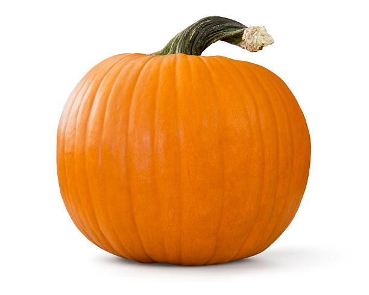

Pumpkin Chicken Puree

Description
This pumpkin and chicken puree is a great source of iron for young babies.
It also includes enough spice to be interesting to eat!
Ingredients
- 1 Can of Pumpkin Puree
- 1 Pound of Chicken Thighs/Breasts
- 1 tsp curry powder
- 1/4 cup of Chicken Broth
Directions
- Pre-heat the oven to 350 degrees
- Wrap chicken in aluminium foil
- Place aluminium wrapped chicken in the oven for 30 minutes until fully cooked
- When chicken has cooled, place chicken, pumpkin curry powder and broth in a blender
- Blend until smooth
- Serve warm